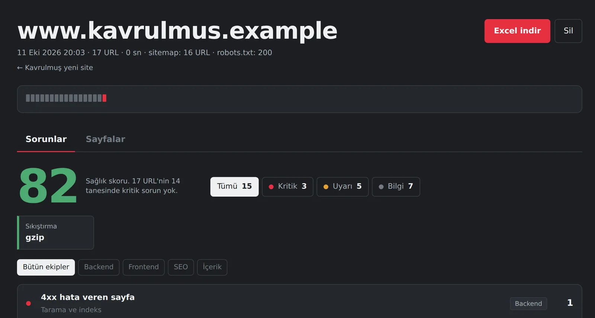
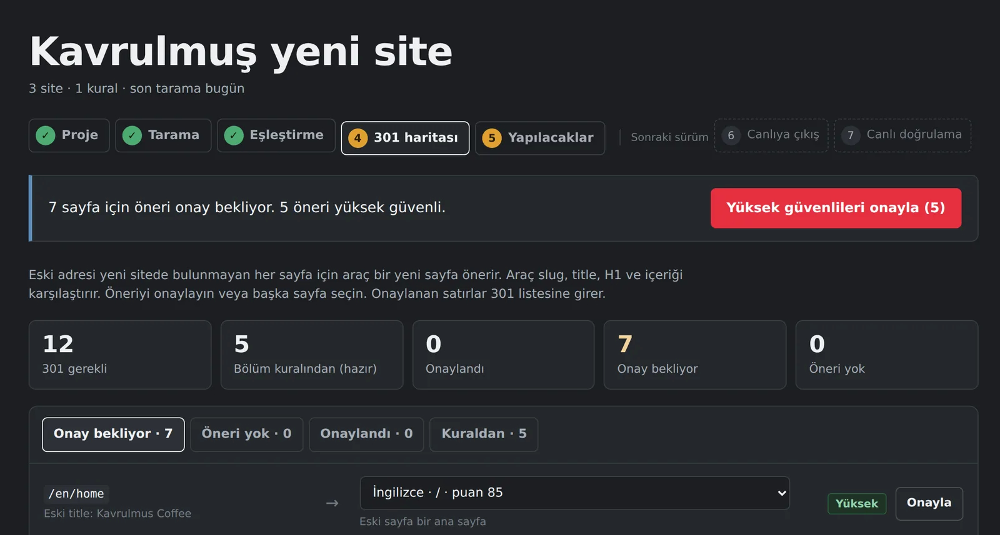

Sitenizi ölçün. Taşırken hiçbir sayfayı kaybetmeyin.
SEO Audit siteyi tarar ve 88 kuralla denetler. Sorunları işi yapacak ekibe göre gruplar. Site yenilemede eski siteyi yeni site ile karşılaştırır ve 301 listesini hazırlar.
Lejant
- Eski site
- Araç her sayfayı tarar. Her yönlendirme adımını kaydeder. Sitemap ve robots.txt kurallarını okur.
- Yeni site
- Staging veya yeni alan adı. Dil siteleri ayrı alan adında olabilir.
- Sorun
- 88 kural: title, meta, H1, kırık link, canonical, hreflang, SSL, HSTS ve daha fazlası.
- Ekip
- Her sorun bir ekibe gider: Frontend, Backend, İçerik veya SEO. Liste doğru kişiye ulaşır.

Site denetimi
Pafta 1. Tek site
Bir adres yazın. Araç siteyi tarar ve her sayfayı kurallarla kontrol eder.
- Sağlık skoruKritik sorunu olmayan sayfaların oranı
- Önem ve ekip filtresiKritik, uyarı, bilgi. Frontend, Backend, İçerik, SEO
- Site kartıSite sürümleri, SSL, HSTS, sıkıştırma, llms.txt
- ExcelBütün sayfalar ve sorunlar tek dosyada

Taşıma projesi
Pafta 2. Site yenileme
Eski siteyi ve yeni siteyi tarayın. Araç her eski sayfanın yeni yerini bulur.
- ProjeEski site, staging ve dil siteleri
- TaramaHer site tek düğme ile
- EşleştirmeBölümler yeni yerine. Yanlış dil seçimi uyarı verir
- 301 haritasıSlug, title ve içerik benzerliği ile öneri. CSV çıktısı
- YapılacaklarKalan işler ekibe göre
- Canlıya çıkışSonraki sürüm
Durum
Kişisel proje. Geliştirme devam ediyor. Sıradaki işler: canlıya çıkış kontrolü ve canlıda 301 doğrulama. Tarama sunucuda çalışır, taranan veri dışarı gönderilmez.
| Proje | SEO Audit |
|---|---|
| Altyapı | Node.js, 4 bağımlılık |
| Durum | Kişisel proje, geliştiriliyor |